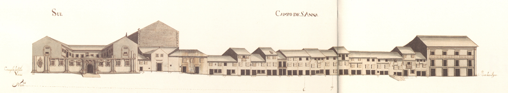

Grande espaço aberto em frente à porta de Souto, onde já na Idade Média
passava uma rua- a Corredoura- que levava à Senhora a Branca e
S.Victor, donde partia a estrada para Chaves ou Bom Jesus.
Nos inícios do porta do Souto para Santa Maria a Branca».
O arcebispo D.Diogo de Sousa, «mandou fazer o rocio de Santa Ana...
e comprou estas vinhas e campos até ao padrão onde está uma cruz acerca de Nossa Senhora e meteu
tudo neste rocio de Santa Ana, e do dito padrão para diante alargou aquele campo até Nossa Senhora»,
criando assim um espaço amplo e belo onde «fez de novo a Ermida se Santa Ana, com a sua capela e
escada... e poz de redor delas certas colunas escritas do tempo dos romanos» e «uma Cruz... com
seus degraus e haste».
Era a transformação deste local em amplo espaço urbano. Até essa data apenas existia a capela
de S.Gonçalo, fundada poucos anos antes, em rua da Corredoura.D.Jorge da
Costa, além da
Com a construção de uma casa «àporta do Souto...[para] estrebarias e alpendre
com suas colunas para pousarem de praça os Almocreves» e de «um pelourinho de pedra». por ordem
também de D.Diogo, ficava imediatamente criado um polo de atracção
e comércio que pela proximidade com que estava deste campo, não deixaria de o afectar; o que aliás
é visível no desenho das casas existentes no seu extremo Sudoeste.
Em recolhimento das Beatas da
Penha de França, que seria ampliado em
Passados 34 anos instalaram-se aqui os Oratorianos que
lançaram a primeira pedra para a sua igreja em André Soares.
Em Recolhimento das Convertidas, em espaço contíguo.
Com todas estas instituições, onde nos permitimos salientar os campo de Santa Ana
foi tomando uma importância na vida da cidade que atingiu o seu máximo em meados do século passado,
e que ainda hoje mantém.Oratonianos pela forma com que souberam atrair as populações,
Em rua de Águas que tem quatro vãos e três pisos, com uma raríssima varanda corrida no
seu último andar, todas as outras são bastantes diferentes. São habitações na sua maioria de três
pisos (sendo o terceiro sobradado em quatro delas), com amplas portas para possibilitar melhor comércio
e com janelas bracarenses. Curiosamente não encontramos aqui nenhuma casa recoberta de gelosias.
No extremo Sudeste está o convento dos Congregados,
ainda em construção.
Não deixa de ser curioso assinalar que quando na
Das 8 casas do lado Norte e 20 do Sul, eram prazos do Cabido
5 e 2, respectivamente.
O campo de Santa Ana tem o nome actual de avenida Central.
Campo de Santa Ana - Norte.Campo de Santa Ana - Sul.
Casa número: 1
enfiteuta: D.Agostinha de Barros Gavião, enfiteuta principal do casal dos Chãos ou Quinteiro,
sito na freguesia de S.José de S.Lázaro
O campo de Santa Ana tem o nome actual de avenida Central.
Casa número: 2
enfiteuta: D.Agostinha de Barros Gavião, enfiteuta principal do casal dos Chãos ou Quinteiro,
sito na freguesia de S.José de S.Lázaro
O campo de Santa Ana tem o nome actual de avenida Central.
Casa número: 3
enfiteuta: D.Agostinha de Barros Gavião, enfiteuta principal do casal dos Chãos ou Quinteiro,
sito na freguesia de S.José de S.Lázaro
O campo de Santa Ana tem o nome actual de avenida Central.
Casa número: 4
enfiteuta: D.Agostinha de Barros Gavião, enfiteuta principal do casal dos Chãos ou Quinteiro,
sito na freguesia de S.José de S.Lázaro
O campo de Santa Ana tem o nome actual de avenida Central.
Casa número: 5
enfiteuta: D.Agostinha de Barros Gavião, enfiteuta principal do casal dos Chãos ou Quinteiro,
sito na freguesia de S.José de S.Lázaro
O campo de Santa Ana tem o nome actual de avenida Central.
Casa número: 6
enfiteuta: Manuel Fernandes Lima
O campo de Santa Ana tem o nome actual de avenida Central.
Casa número: 7
enfiteuta: Manuel Fernandes Lima
O campo de Santa Ana tem o nome actual de avenida Central.